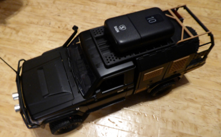
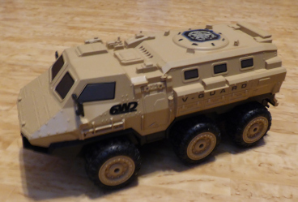
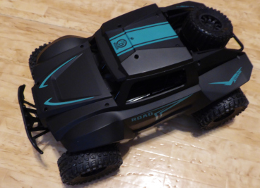
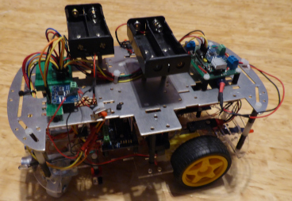
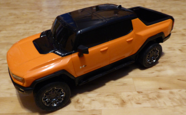
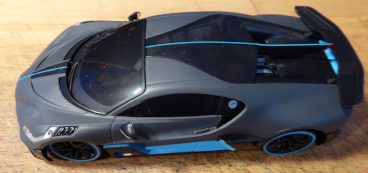

mR007x Tech
Robotik, Inbyggda System, AI, Webb/Moln, System
Utvalda Projekt!

Arduino Land Rover Robot
Arduino Land Rover Robot, är en självkörande robot byggd kring Arduino Nano RP2040 Connect. Den använder sensorer som ultraljud, infraröd och IMU för att navigera. En radiostyrd bil har använts som grund där elektroniken för radiostyrning tagits bort. Programmerad i C++.

ESP32 V-Guard 6WD Robot
ESP32 V-Guard 6WD Robot är en självkörande robot byggd kring ESP32. Den använder sensorer som ultraljud, ToF laser och IMU för navigering. En radiostyrd bil har använts som grund där elektroniken för radiostyrning tagits bort. Programmerad i C++.

Raspberry Pi Zero W Offroad Robot
Raspberry Pi Zero W Offroad Robot är en självkörande robot byggd kring Raspberry Pi Zero W. Den använder sensorer som ultraljud, infraröd och IMU för navigering. En radiostyrd bil har använts som grund där elektroniken för radiostyrning tagits bort. Programmerad i Java och Python/MicroPython.

Arduino 2WD Robot
Arduino 2WD Robot är en självkörande robot byggd kring Arduino Mega 2560. Den använder sensorer som ultraljud, infraröd och IMU för navigering. Byggd kring ett enklare robotkit. Programmerad i C++

ESP32 Hummer EV Robot
ESP32 Hummer EV Robot är en självkörande robot byggd kring ESP32. Den använder sensorer som ToF laser och IMU för navigering. En radiostyrd bil har använts som grund där elektroniken för radiostyrning tagits bort. Programmerad i C++.

Arduino Bugatti Divo Robot
Arduino Bugatti Divo Robot är en självkörande robot byggd kring Arduino Pro Mini. Den använder sensorer som ToF laser för navigering. En radiostyrd bil har använts som grund där elektroniken för radiostyrning tagits bort. Programmerad i C++.

Teststation för Oscilloskop
Teststation för Oscilloskop är en teststation byggd kring ESP32. Den använder moduler för att skapa signaler med mera för att testa funktionalitet i ett oscilloskop. Programmerad i C++
Väderapplikation
Väderapplikation Som hämtar data från SMHI.se och YR.no för visning av senast avlästa värden baserat på användarval, statistik och analys. Programmerad i Java. Använder Quarkus och Angular för att köras i molnet.
Personlig Budget
Personlig budget För hantering av personlig budget. Statistik och analys över inkomster och utgifter. Programmerad i Java. Skrivbordsapplikation skapad med hjälp av JavaFX.